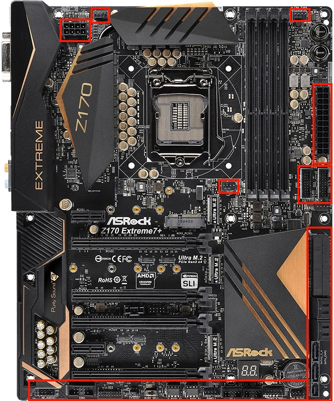
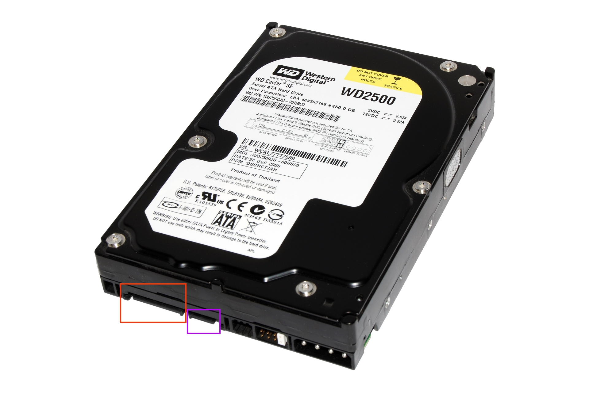

Plugging It All In!
This is the final building step! All that's left is to plug in the various cables from your power supply!
You may or may not need the pliers for this process. It's handy to keep them around, regardless.
This guide will not be as specific as some of the others have been, as each power supply and motherboard is different. Refer to your manuals for all specific instructions.
Click any images on this page to open them in a separate tab/window for better viewing.

Steps:
- REFER TO YOUR MANUAL! I cannot provide specific instructions here. For an example, look at the image to the right. Every red outline is around a potential plug for your cables. You may not need them all, and your motherboard may not have them all. That's why you need to refer to the manual.
- Find the major power cable. This will be the thickest and widest cable you have. This will usually plug in to the right side of your motherboard. It's important to be careful with how much pressure you put on the board here. It's a good idea to slip a finger under the board for extra support as you push the cable in, as it can be very tight to do so.
- Ensure the CPU power is plugged in, as well as the CPU fan from earlier. These are small and can be forgotten. They are located around the CPU socket.
- Plug in your cables for your hard drives. This includes power and data transfer (see the hard drive image to the left; Red is power, purple is data).
- Plug in your GPU cables. This will vary between cards, and some may not have any power at all! If they do require power, the connector is on the side of the card, facing out from the case, toward you.
- Plug in any case cables, including fans and power buttons. This will be referred in the case manual.
- Finally, plug in the power supply cable to the back of your PC and to an outlet. Then plug in your monitor (make sure it goes to your GPU if you have one) as well as your mouse and keyboard.
Once again, I cannot give specific instructions here. It depends on the case, motherboard, and power supply that you buy. Refer to all of these manuals for specific help.
That's the end of the build process! The final step is to test the machine!